class: center <br> # Spatial Analysis of Urban Data ## Raster Data Processing & Satellite Image Analysis [Bayi Li](mailto:barryli081@gmail.com) <br> .toc-wrapper[ <div class="toc"> <a href="#raster-model" class="toc-item">Raster Data Model</a> <a href="#raster-vs-vector" class="toc-item">Raster vs Vector</a> <a href="#raster-types" class="toc-item">Raster Types & Sources</a> <a href="#satellite-imagery" class="toc-item">Satellite Imagery</a> <a href="#operations" class="toc-item">Raster Operations</a> <a href="#indices" class="toc-item">Remote Sensing Indices</a> <a href="#cv-raster" class="toc-item">Computer Vision & Raster</a> <a href="#tools" class="toc-item">Tools & Libraries</a> <a href="#tutorial" class="toc-item">Tutorial Workflow</a> </div> ] --- name: raster-model ## The Raster Data Model A **raster** represents space as a regular grid of cells (pixels). Each cell stores a numeric value that describes a property at that location. <div align="center"> <figure> <p>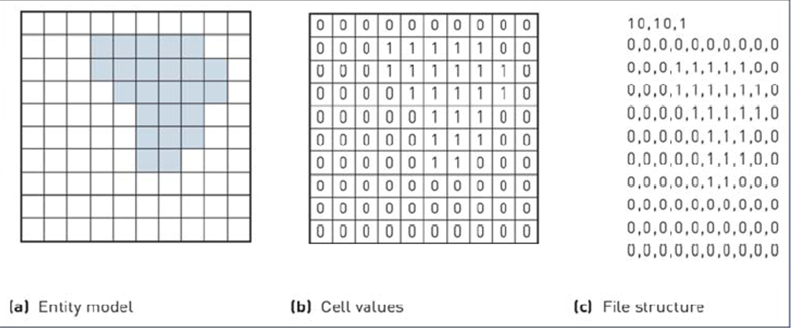</p> <figcaption>A simple raster grid: each cell holds one value.</figcaption> </figure> </div> - Every cell has the same width and height — the **resolution**. - The grid has a defined **extent** (bounding coordinates) and a **Coordinate Reference System (CRS)**. - Rasters may contain one band (single-band) or many bands (multi-band). Raster is the natural format for **continuous phenomena** (elevation, temperature, air quality) and **imagery** (satellite, aerial, drone). --- ## When to Use Raster Raster is most appropriate when the phenomenon is: - **Continuous** — varies smoothly across space - **Gridded** — measured or modelled on a regular lattice - **Image-based** — captured by a sensor as pixels - **Repeated** — monitored over time at the same locations | Domain | Example Raster Data | |---|---| | Elevation & Terrain | Digital Elevation Models (DEM), slope, aspect | | Climate & Weather | Temperature distribution, rainfall surfaces | | Remote Sensing Imagery | Satellite images (multispectral), aerial photos | | Environmental Pollution | Air quality index, noise pollution gradients | | Hydrology | Flood depth maps, groundwater potential zones | | Agriculture | Crop health monitoring, biomass estimation | | Hazard & Risk | Landslide susceptibility, wildfire risk zones | --- name: raster-vs-vector ## Vector and Raster Data Models Spatial data is primarily represented using two major models: .left_half[ **Vector data** represents discrete features as geometries: - **Points**, **lines**, and **polygons** - e.g. bus stops, roads, buildings, planning areas **Raster data** represents space as a grid of cells: - Each cell (pixel) stores a value - e.g. satellite imagery, elevation, land surface temperature ] .right_half[ <div align="center"> <figure> <p>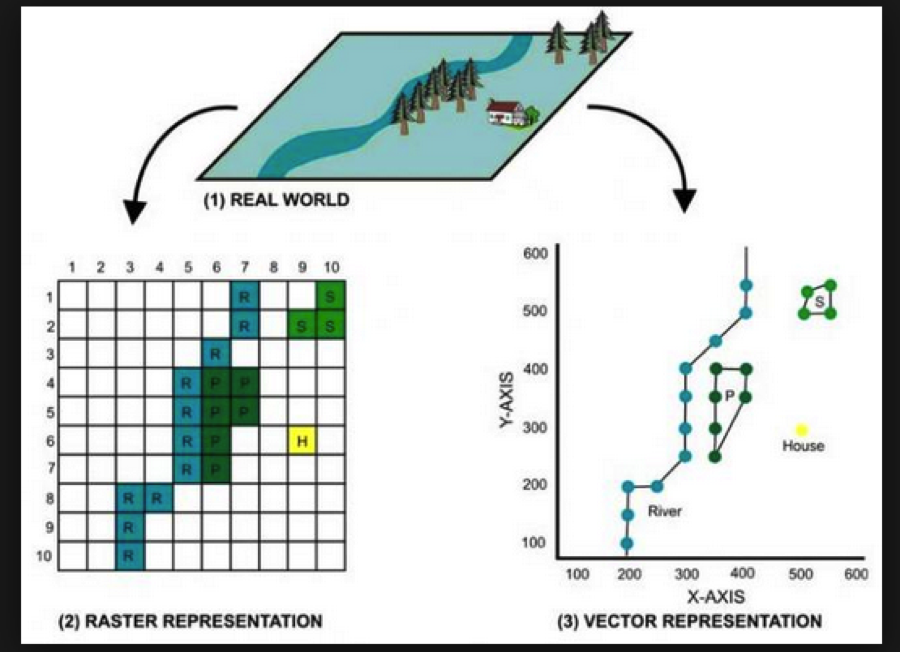</p> <figcaption>Raster and vector representation of real world entities.</figcaption> <figsubcaption>Source: https://gis.stackexchange.com/questions/7077/what-are-raster-and-vector-data-in-gis-and-when-to-use</figsubcaption> </figure> </div> ] .clear[] --- ## Vector vs. Raster: The Key Difference - **Vector** describes *where things are* using coordinates — best for objects with **clear boundaries** (e.g. parcels, roads). - **Raster** describes *what value each location has* — best for **continuous phenomena** that vary across space (e.g. temperature, elevation). The choice of data model affects how data is stored, visualised, and analysed. Both are covered in detail in this course: [Week 6 (vector)](vector.html) and [Week 8 (raster)](#). --- ## Comparison: Vector and Raster Data Model .center-table[ | | Raster | Vector | |---|---|---| | **Advantages** | Simple data structure | More compact | | | Efficient in overlay operations | Efficient in topology-based operations | | | Better represents high spatial variability | Better map visualisation | | | Widely used in remote sensing and image data | | | **Disadvantages** | Less compact | More complex | | | Underrepresented topological relationships | Inefficient for high spatial variability | | | Disadvantages in visualisation | Unable to handle image data | ] **Rule of thumb:** - Use **vector** for objects with clear boundaries and relationships. - Use **raster** for continuous data or when performing spatial modelling that requires grid-based calculations. --- ## Interconversion between Vector and Raster Data .left_half[ ### Vector to Raster Conversion (Rasterisation) <div align="center"> <figure> <p>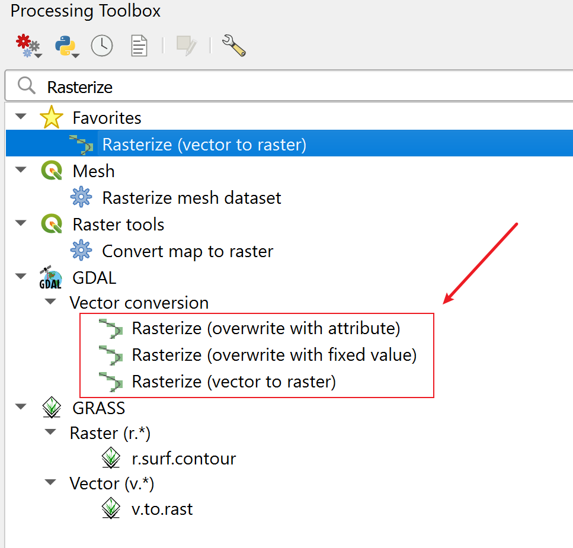</p> <figcaption>Converting vector features to raster cells in QGIS.</figcaption> </figure> </div> ] .right_half[ ### Raster to Vector Conversion (Vectorisation/Polygonisation) <div align="center"> <figure> <p>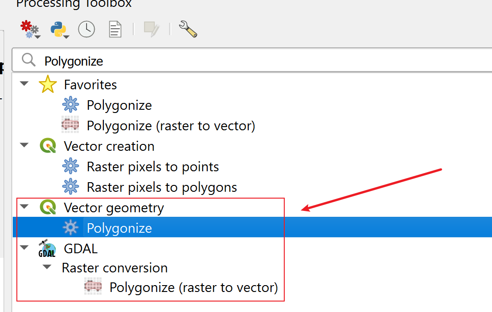</p> <figcaption>Converting raster cells to vector polygons in QGIS.</figcaption> </figure> </div> ] .clear[] Conversion is useful when: - You need to combine raster-derived information with vector boundaries. - You want to run a raster-based model but only have vector input. - You need to extract discrete objects from a classified raster. --- ## Creating Raster Data in QGIS .right_half[ <figure> <p>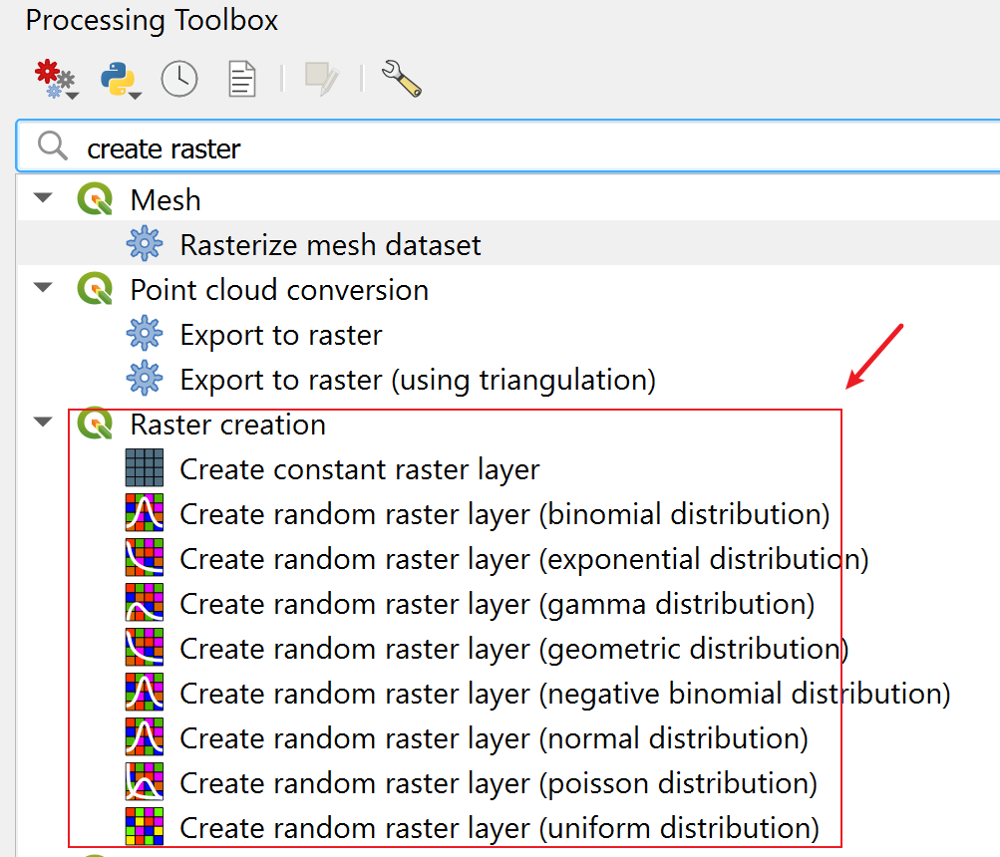</p> <figcaption>QGIS dialog for creating a new raster layer.</figcaption> </figure> ] Raster layers need more parameters and structure than vector layers: - **Resolution** (cell size in map units) - **Extent** (bounding coordinates) - **Data type** (integer, float) - **Initial values** (nodata, constant, or computed) --- name: raster-types ## Raster Data Types ### Continuous vs. Discrete Rasters **Continuous raster:** Cell values vary continuously to form a surface — e.g. elevation, temperature, air quality. <div align="center"> <figure> <p>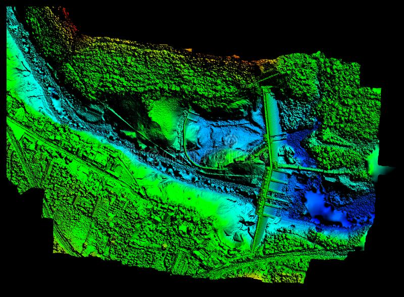</p> <figcaption>Digital Elevation Model (DEM) — a continuous raster.</figcaption> <figsubcaption>Source: AI Singapore, https://aisingapore.org/tech-offers/improving-satellite-digital-elevation-models-dem-using-ai/</figsubcaption> </figure> </div> --- ## Raster Data Types ### Continuous vs. Discrete Rasters **Discrete (categorical) raster:** Cells represent phenomena with clear boundaries and categorical attributes — e.g. land cover classes, zoning. <div align="center"> <figure> <p>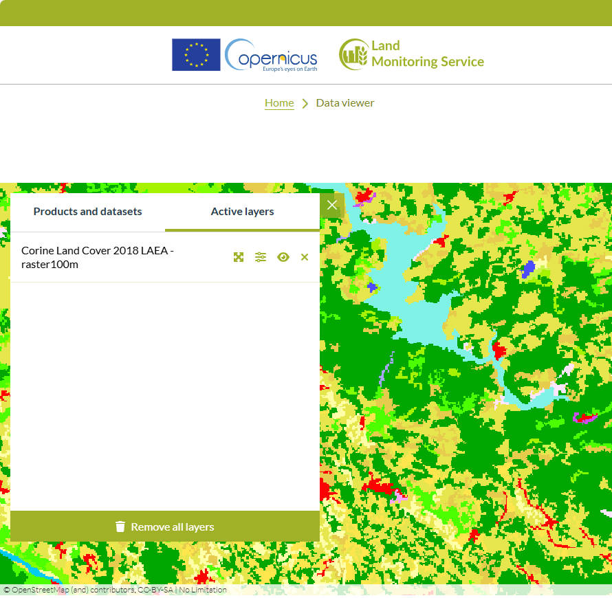</p> <figcaption>CORINE Land Cover — a discrete (categorical) raster.</figcaption> </figure> </div> --- ## Raster Data Types ### Single-band vs. Multi-band Rasters **Single-band raster:** Each cell holds one value — e.g. DEM, slope, a single spectral band. **Multi-band raster:** Each cell holds multiple values stacked as bands — e.g. RGB imagery (3 bands), Landsat (7–11 bands), hyperspectral sensors (hundreds of bands). <div align="center"> <figure> <p>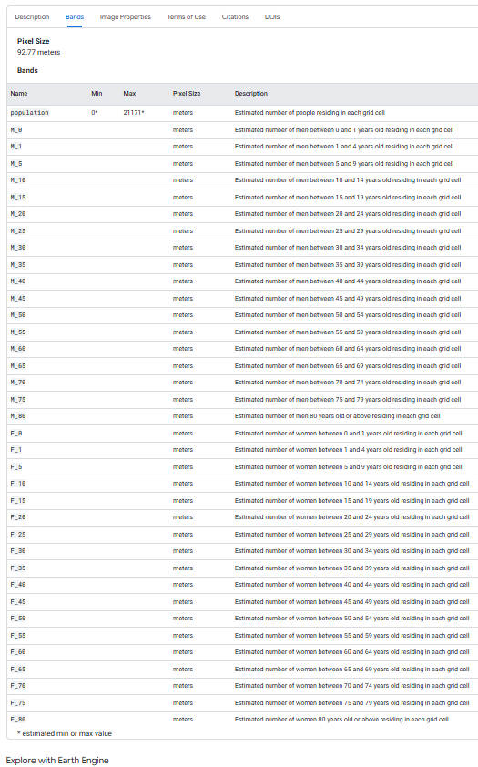</p> <figcaption>Multi-band raster opened in QGIS showing individual bands.</figcaption> </figure> </div> --- ## Raster Data Interpretation When inspecting a raster, always check: | Property | Question | |---|---| | **CRS** | Is it geographic (lat–lon) or projected? | | **Resolution** | What real-world distance does one cell represent? | | **Extent** | What geographic area does it cover? | | **Bands** | How many bands and what does each represent? | | **Data type** | Are values integer, float? What is the nodata value? | | **Statistics** | What are the min, max, mean, and distribution? | <div align="center"> <figure> <p>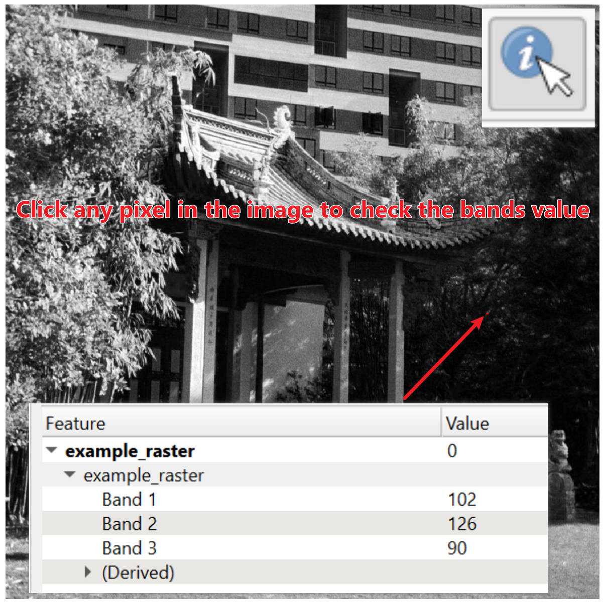</p> <figcaption>Inspecting raster properties and pixel values in QGIS.</figcaption> </figure> </div> --- ## Raster Data Formats Common raster file formats you will encounter: - **GeoTIFF** (`.tif`, `.tiff`): The standard — embeds CRS, extent, and metadata. Widest software support. - **GeoPackage** (`.gpkg`): Can store both raster and vector tiles in a single SQLite database. - **IMG** (`.img`): ERDAS Imagine format, common in remote sensing workflows. - **JPEG 2000** (`.jp2`): Compressed format used by Sentinel-2 products. - **NetCDF** (`.nc`): Common for climate and oceanographic raster data. - **HDF** (`.hdf`, `.h5`): Hierarchical format used by MODIS and other NASA products. Different formats are not just technical details — they affect compression, metadata handling, and software compatibility. --- name: satellite-imagery ## Satellite Imagery as Raster Data Satellite imagery is a multi-band raster captured by sensors on orbiting platforms. <div align="center"> <figure> <p>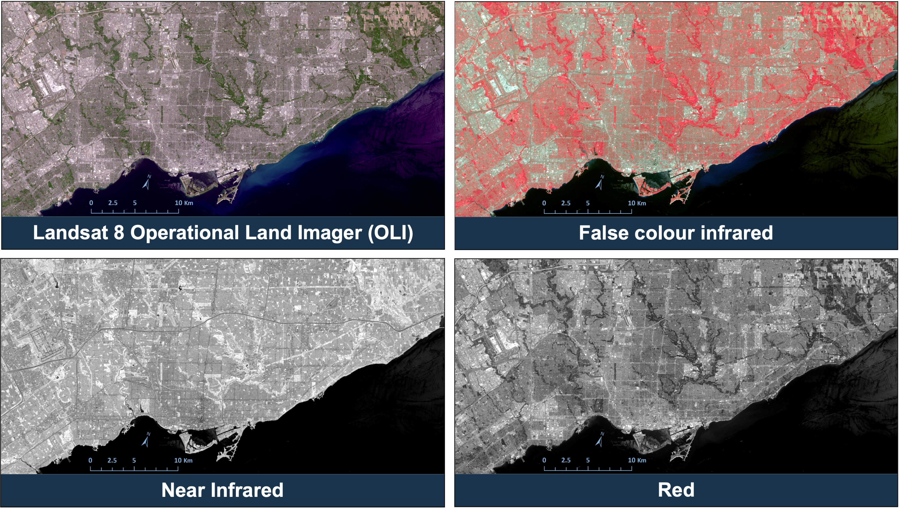</p> <figcaption>Landsat 8 satellite and its operational land imager.</figcaption> </figure> </div> Major open-access satellite programmes: | Programme | Agency | Bands | Resolution | Revisit | |---|---|---|---|---| | **Landsat 8/9** | NASA/USGS | 11 bands | 15–100 m | 16 days | | **Sentinel-2** | ESA/Copernicus | 13 bands | 10–60 m | 5 days | | **MODIS** | NASA | 36 bands | 250–1000 m | 1–2 days | | **SRTM / ASTER** | NASA | DEM | 30 m | static | --- ## Understanding Satellite Image Bands Each band captures a specific range of the electromagnetic spectrum: <div align="center"> <figure> <p>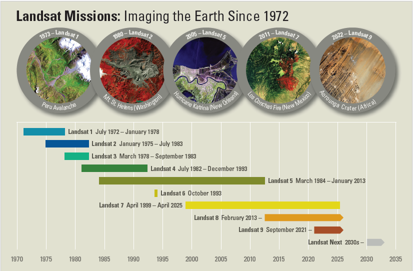</p> <figcaption>Landsat mission timeline and band evolution.</figcaption> </figure> </div> | Band Type | Wavelength | What It Reveals | |---|---|---| | **Coastal aerosol** | 0.43–0.45 µm | Shallow water, dust, smoke | | **Blue** | 0.45–0.51 µm | Water penetration, atmosphere | | **Green** | 0.53–0.59 µm | Vegetation vigour | | **Red** | 0.64–0.67 µm | Chlorophyll absorption, vegetation | | **NIR** (Near Infrared) | 0.85–0.88 µm | Vegetation health, biomass | | **SWIR** (Shortwave IR) | 1.57–2.29 µm | Moisture, geology, built-up | | **Thermal** | 10.60–12.51 µm | Surface temperature | --- ## True Colour vs. False Colour Composites By assigning different bands to the RGB display channels, you reveal different information: <div align="center"> <figure> <p>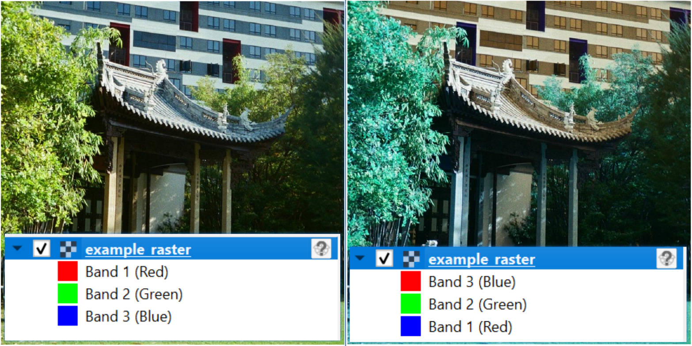</p> <figcaption>Left: True colour (Red, Green, Blue). Right: False colour (NIR, Red, Green) highlighting vegetation in red.</figcaption> </figure> </div> - **True colour** (R, G, B): what the human eye would see — good for visual interpretation. - **False colour infrared** (NIR, R, G): vegetation appears bright red — widely used in agriculture and forestry. - **Urban false colour** (SWIR, NIR, Red): built-up areas are distinct from vegetation — useful for urban studies. --- ## Understanding Image Values in QGIS <div align="center"> <figure> <p>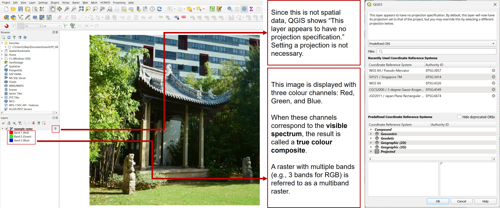</p> <figcaption>Inspecting individual band values of a satellite image in QGIS.</figcaption> </figure> </div> <div align="center"> <figure> <p>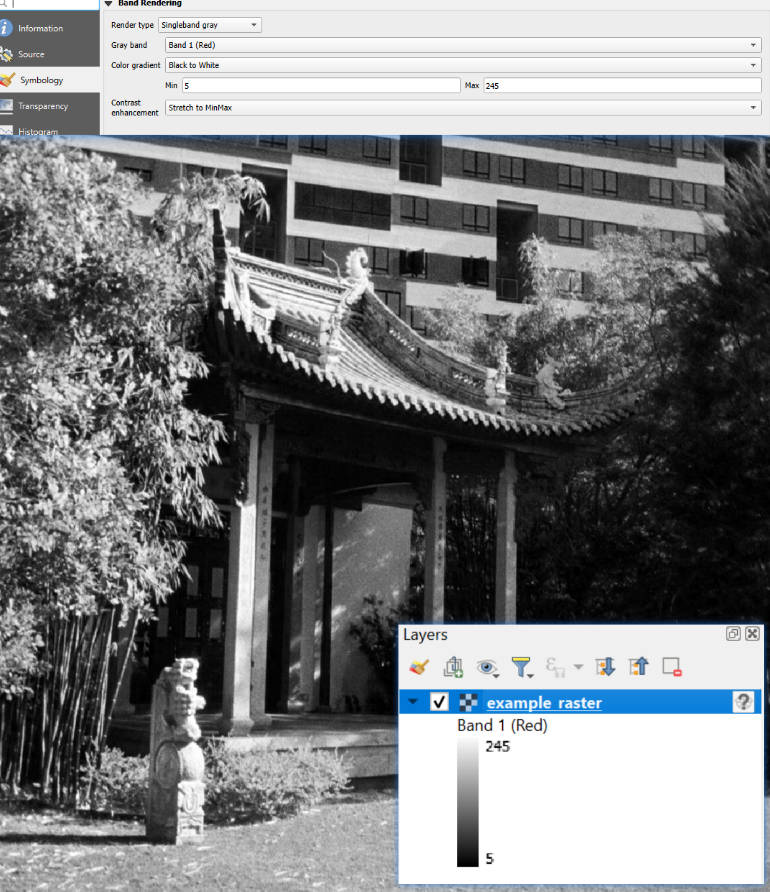</p> <figcaption>Displaying a single (red) band from a multi-band satellite image.</figcaption> </figure> </div> --- ## Sources of Satellite and Aerial Imagery | Data Source | URL | Content | |---|---|---| | USGS EarthExplorer | https://earthexplorer.usgs.gov/ | Landsat, ASTER, SRTM, NAIP | | Copernicus Data Space | https://dataspace.copernicus.eu/ | Sentinel-1, Sentinel-2, Sentinel-3 | | NASA EarthData | https://search.earthdata.nasa.gov/ | MODIS, VIIRS, ASTER, SRTM | | OpenAerialMap | https://openaerialmap.org/ | Open-licensed aerial imagery | | Google Earth Engine | https://developers.google.com/earth-engine/datasets | Planetary-scale catalogue | | OpenStreetMap (raster basemaps) | Various tile servers | Basemap imagery tiles | --- name: operations ## Core Raster Operations GIS raster analysis builds on a set of fundamental operations: <div align="center"> <figure> <p>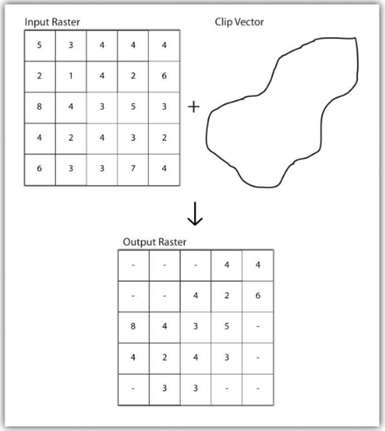</p> <figcaption>Clipping: extract raster data within a boundary.</figcaption> </figure> </div> --- ## Clipping and Masking .left_half[ <div align="center"> <figure> <p>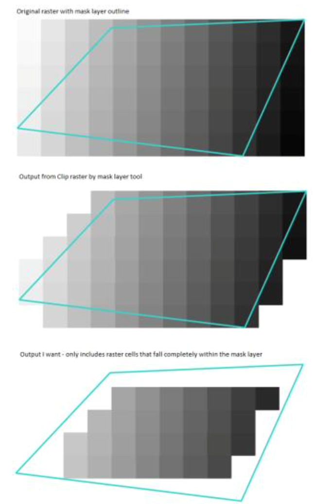</p> <figcaption>Raster before clipping to study area.</figcaption> </figure> </div> ] .right_half[ <div align="center"> <figure> <p>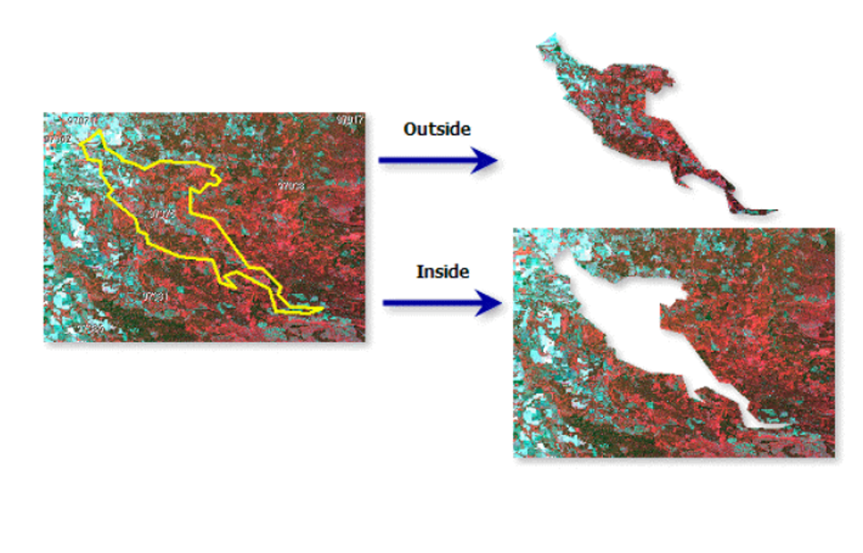</p> <figcaption>Raster after clipping to study area boundary.</figcaption> </figure> </div> ] .clear[] - **Clip by extent**: trim the raster to a bounding rectangle. - **Clip by mask layer**: trim the raster to an irregular polygon boundary. - **Mask**: set cells outside the area of interest to NoData. --- ## Raster Overlay and Map Algebra Combine multiple raster layers cell-by-cell using arithmetic, Boolean, or conditional expressions. <div align="center"> <figure> <p>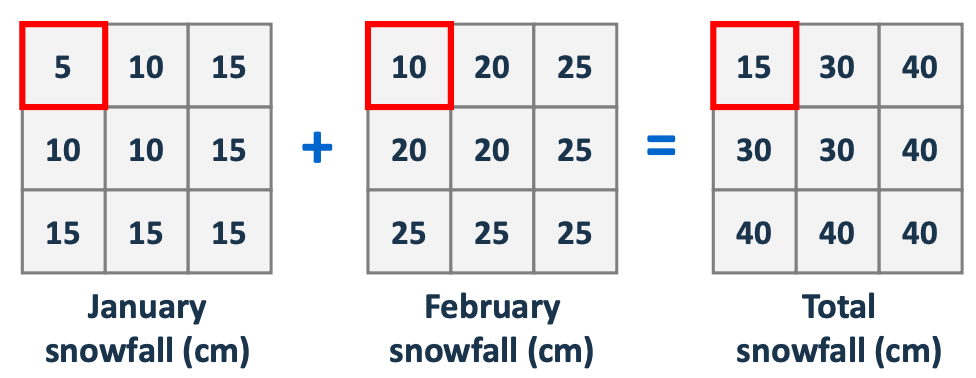</p> <figcaption>Raster overlay: combining multiple layers through cell-by-cell operations.</figcaption> </figure> </div> **Map algebra** expressions: - `"slope > 15"` — extract steep areas - `"landcover == 2"` — isolate a single land cover class - `"NDVI * 100"` — rescale values - `"elevation > 100 AND slope < 5"` — multi-criteria selection --- ## Reclassification Assign new values to ranges of cell values — simplify a continuous raster into meaningful categories. <div align="center"> <figure> <p>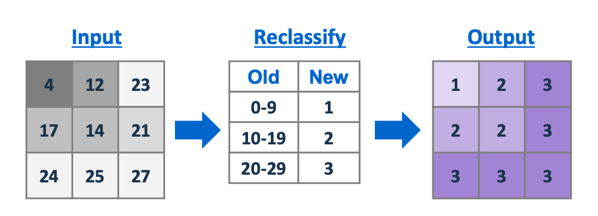</p> <figcaption>Reclassification: grouping cell values into discrete classes.</figcaption> </figure> </div> Common use cases: - Reclassify elevation into low, medium, high terrain. - Reclassify a vegetation index into sparse, moderate, dense vegetation. - Reclassify slope into buildable and non-buildable categories. - Simplify a land cover classification by merging similar classes. --- ## Warping and Resampling Rasters from different sources often have different CRS, resolution, or alignment. <div align="center"> <figure> <p>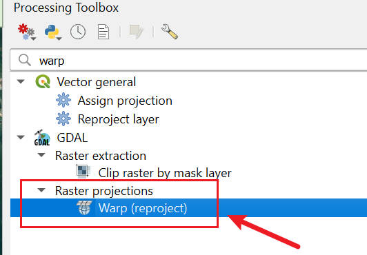</p> <figcaption>Reprojecting (warping) a raster to a target CRS.</figcaption> </figure> </div> **Resampling methods:** - **Nearest neighbour**: preserves original values — best for categorical rasters. - **Bilinear / Cubic**: interpolates new values — best for continuous rasters. - **Majority**: takes the most common value — useful for aggregating categorical data. --- ## Slope and Terrain Analysis From a DEM, you can derive terrain variables useful for urban and environmental analysis: <div align="center"> <figure> <p>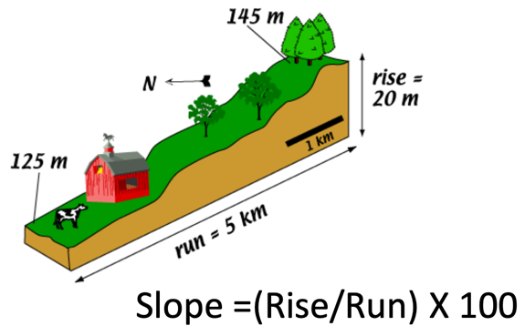</p> <figcaption>Slope derived from a DEM — essential for terrain and suitability analysis.</figcaption> </figure> </div> | Derivative | Description | Urban Use | |---|---|---| | **Slope** | Rate of elevation change | Buildability, drainage, landslide risk | | **Aspect** | Compass direction of slope | Solar exposure, microclimate | | **Hillshade** | Simulated illumination | Cartographic relief, visualisation | | **Curvature** | Rate of slope change | Flow accumulation, erosion | | **Viewshed** | Visible area from a point | View impact, security, urban design | --- ## Scale of Analysis Raster analysis is always tied to resolution. The same operation at different cell sizes yields different results. <div align="center"> <figure> <p>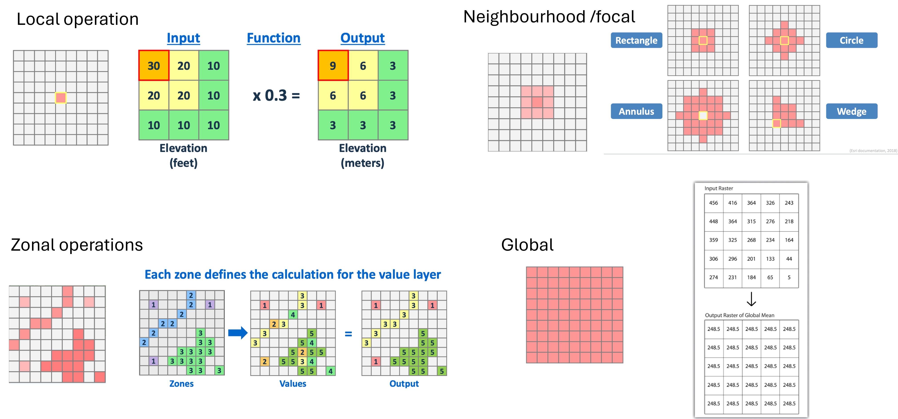</p> <figcaption>Raster analysis at different resolutions reveals different patterns.</figcaption> </figure> </div> **Guideline:** Match the resolution to the question — 30 m Landsat is fine for regional vegetation patterns, but building-level studies need metre or sub-metre imagery. --- ## Zonal Statistics Summarise raster values within vector zones (e.g. planning areas, watersheds, census tracts). <div align="center"> <figure> <p>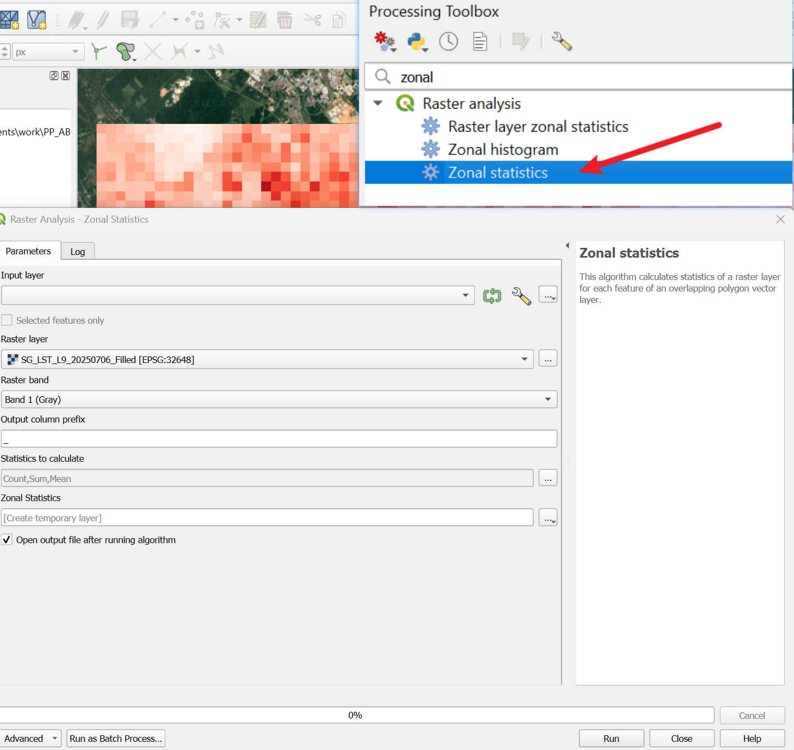</p> <figcaption>Zonal statistics: summarising land surface temperature by Singapore planning area.</figcaption> </figure> </div> Typical statistics per zone: **mean**, **median**, **sum**, **min**, **max**, **standard deviation**, **majority**. Zonal statistics connect continuous raster surfaces with administrative or analytical boundaries — a fundamental bridge between raster and vector. --- name: indices ## Remote Sensing Indices A **spectral index** is a mathematical combination of two or more spectral bands that highlights a specific surface property. Indices reduce multi-band data to a single interpretable value per pixel. <div align="center"> <figure> <p>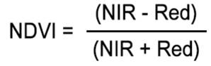</p> <figcaption>The NDVI formula: (NIR − Red) / (NIR + Red).</figcaption> </figure> </div> --- ## Major Remote Sensing Indices | Index | Formula Bands | What It Identifies | Urban Use Cases | |---|---|---|---| | **NDVI** | (NIR−Red) / (NIR+Red) | Vegetation health and density | Urban greenery, park quality, heat mitigation | | **NDWI** | (Green−NIR) / (Green+NIR) *(McFeeters)* | Water bodies | Flood mapping, water resource management | | **NDWI** | (NIR−SWIR) / (NIR+SWIR) *(Gao)* | Vegetation water content | Crop water stress, drought monitoring | | **NDBI** | (SWIR−NIR) / (SWIR+NIR) | Built-up / urban areas | Urban expansion, land-use classification | | **NDMI** | (NIR−SWIR) / (NIR+SWIR) | Vegetation moisture | Drought monitoring, fire risk assessment | | **EVI** | 2.5×(NIR−Red)/(NIR+6×Red−7.5×Blue+1) | Vegetation (corrected for atmosphere/soil) | Dense vegetation monitoring, high-biomass areas | --- ## NDVI: From Calculation to Interpretation <div align="center"> <figure> <p>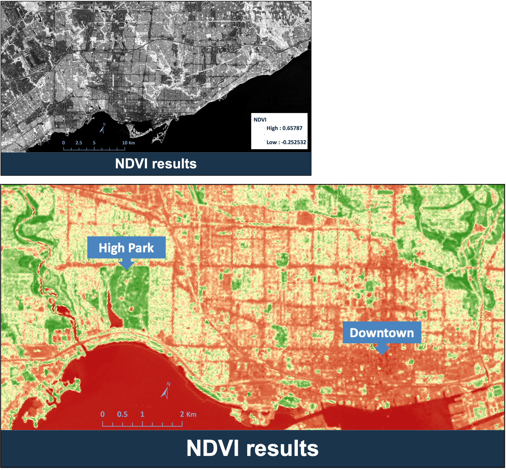</p> <figcaption>NDVI computed and visualised in QGIS.</figcaption> </figure> </div> - **NDVI ≈ 1**: dense, healthy vegetation - **NDVI ≈ 0**: bare soil, rock, or built-up surfaces - **NDVI < 0**: water bodies --- ## NDVI: Comparison and Analysis <div align="center"> <figure> <p>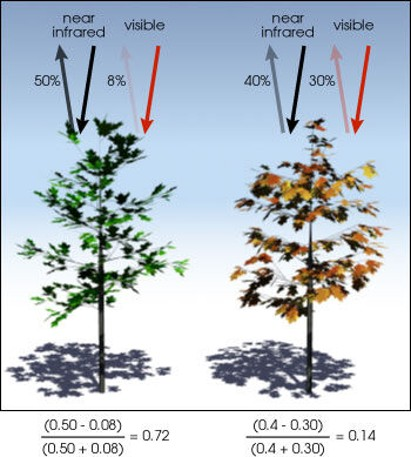</p> <figcaption>Comparing NDVI over the same area — useful for change detection.</figcaption> </figure> </div> --- ## NDVI: Reclassification <div align="center"> <figure> <p>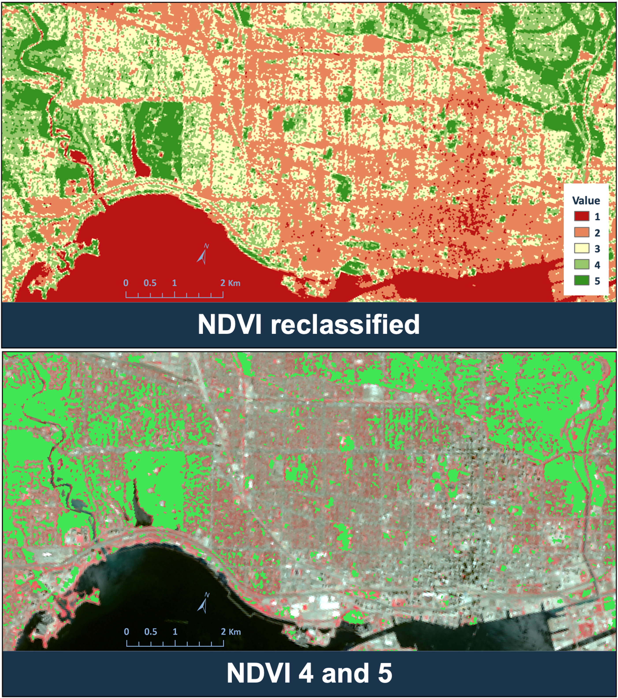</p> <figcaption>Reclassifying NDVI into vegetation density categories.</figcaption> </figure> </div> Reclassification turns a continuous index into policy-relevant categories. --- ## NDVI: Zonal Analysis <div align="center"> <figure> <p>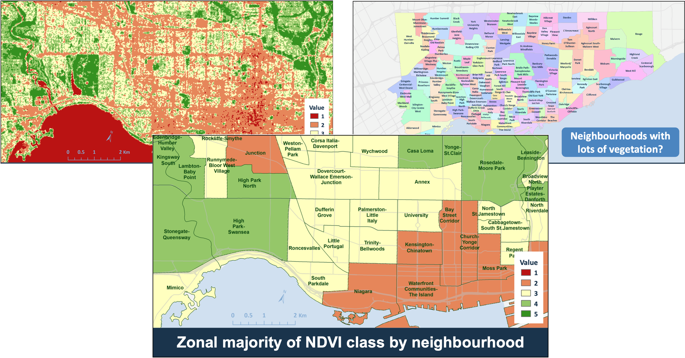</p> <figcaption>Zonal statistics of NDVI aggregated to administrative boundaries.</figcaption> </figure> </div> --- ## Extending NDVI Analysis <div align="center"> <figure> <p>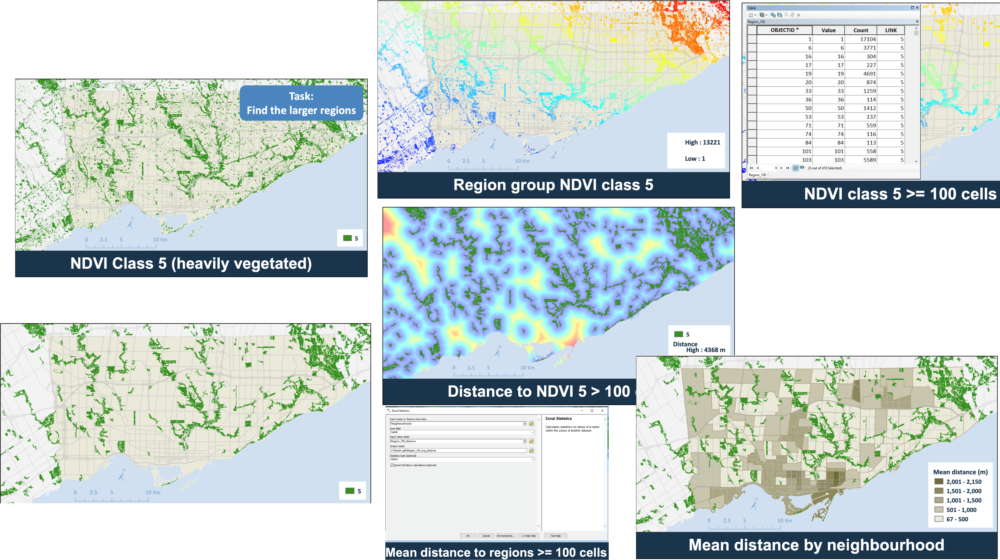</p> <figcaption>Extending NDVI analysis: combining with other datasets for richer urban questions.</figcaption> </figure> </div> NDVI can be combined with: - Population density — who has access to greenness? - Land use / zoning — which land uses are greener? - Socioeconomic data — is greenness equitably distributed? - Heat / LST data — does vegetation reduce surface temperature? --- ## Land Surface Temperature (LST) Thermal bands from Landsat and other sensors can be converted to land surface temperature. <div align="center"> <figure> <p>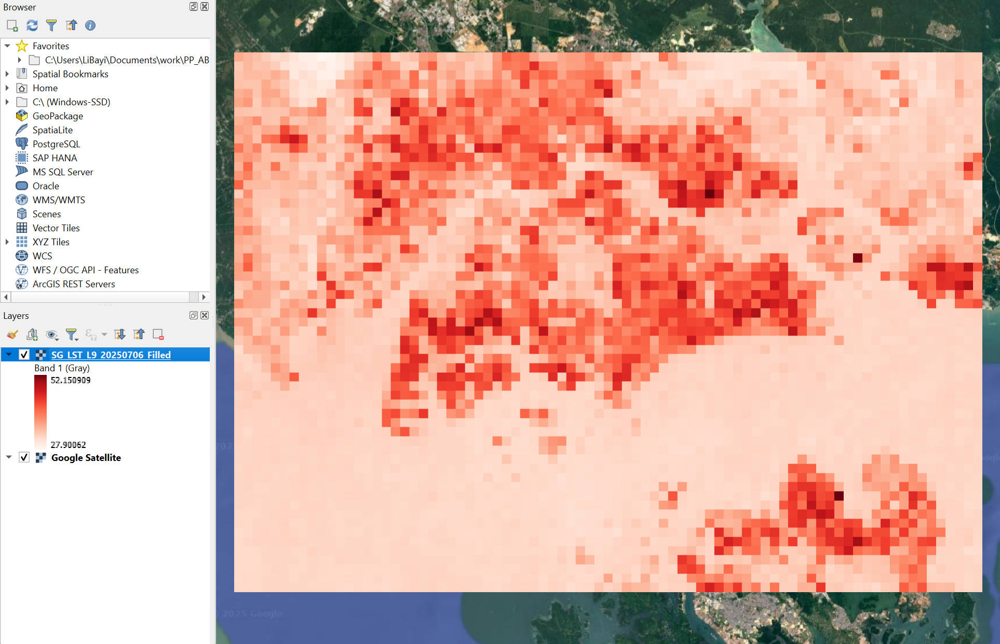</p> <figcaption>Land Surface Temperature derived from Landsat thermal band over Singapore.</figcaption> </figure> </div> LST is highly relevant for urban climate studies: - **Urban Heat Island (UHI)** identification - Relationship between green space and cooling - Heat vulnerability and public health - Energy demand modelling --- ## Nighttime Light Data (NTL) **Nighttime light (NTL)** data detects artificial illumination from human settlements, derived from the Defense Meteorological Satellite Program's Operational Linescan System (DMSP/OLS) and the VIIRS instrument. <div align="center"> <figure> <p>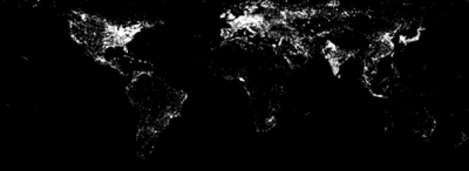</p> <figcaption>Global nighttime light composite showing urbanised regions.</figcaption> </figure> </div> NTL data is powerful because: - Consistent global coverage over decades - High temporal resolution for tracking changes - Proxy for economic activity, urbanisation, and energy use - Useful for studying light pollution and its ecological impacts --- ## NTL: Urban Cluster Identification <div align="center"> <figure> <p>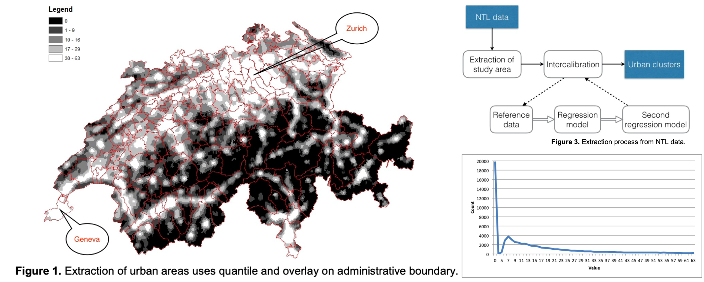</p> <figcaption>Urban clusters identified from nighttime light thresholds.</figcaption> </figure> </div> --- ## NTL: Urban Growth Over Time <div align="center"> <figure> <p>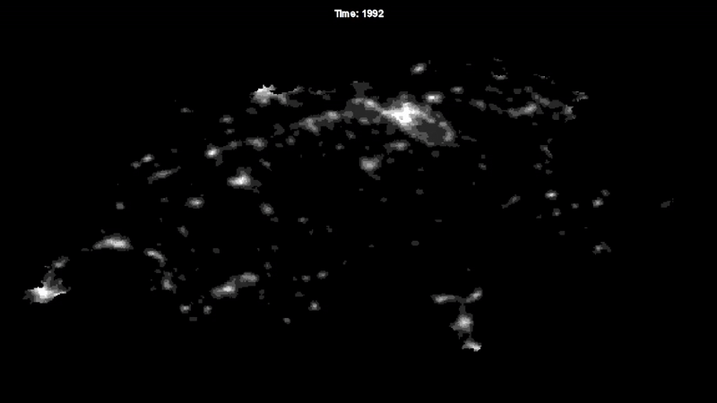</p> <figcaption>Animated change in urban clusters over time from NTL data.</figcaption> </figure> </div> Time-series NTL analysis reveals patterns of urban expansion, contraction, and spatial restructuring. --- name: cv-raster ## Images as Raster Data for Computer Vision An image is a raster: a grid of pixels with values. Computer vision transforms these pixel values into semantic information. Each pixel may store: - one value in **grayscale** imagery - three values in **RGB** images - many values in **multispectral** imagery - a **class label** after segmentation or classification --- ## From Image to Urban Indicator | Step | Input | Output | Urban Interpretation | |---|---|---|---| | Capture | street-view or remote image | geotagged image | observed location | | Preprocess | raw image | aligned, resized image | comparable samples | | Inference | image + model | classes, objects, masks | scene composition | | Measurement | model output | counts, area share, score | quantitative indicator | | GIS analysis | indicator + location | map, statistics, model | spatial pattern | The critical step is maintaining the **spatial reference** attached to every image and every derived measurement. --- ## Common Computer Vision Tasks on Raster Images | Task | Question | Output | Urban Example | |---|---|---|---| | Image classification | What is in this image? | one or more labels | residential vs. commercial street scene | | Object detection | Where are specific objects? | bounding boxes | vehicles, pedestrians, traffic signs | | Semantic segmentation | What class is each pixel? | pixel-level class map | road, sky, building, tree, sidewalk | **Semantic segmentation** is especially useful when the quantity of interest is a visible proportion — such as greenery, sky openness, or road space allocation. --- ## Semantic Segmentation Semantic segmentation assigns a class label to every pixel. <div align="center"> <figure> <p>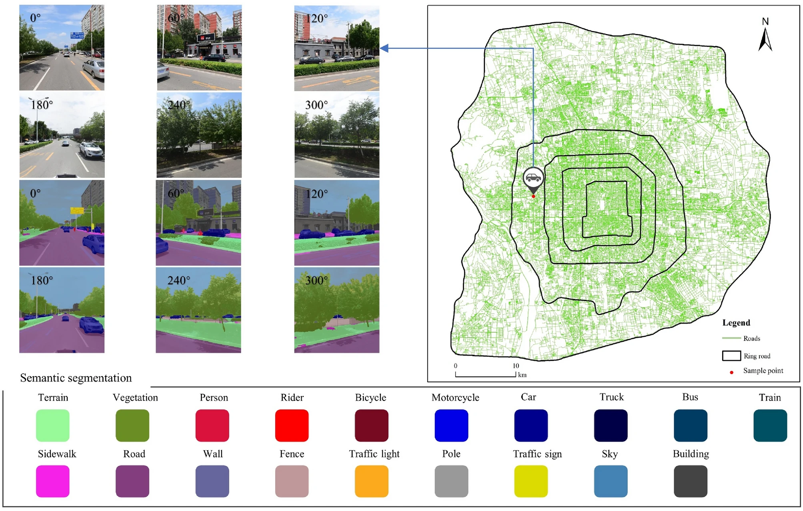</p> <figcaption>Street view image sampling and semantic segmentation.</figcaption> <figsubcaption>Source: 10.1038/s41598-024-81451-6</figsubcaption> </figure> </div> The output can be measured directly: percentage of vegetation pixels, sky pixels, building facade pixels, and other visible classes. --- ## What the Segmented Image Gives Us | Class | Possible Measurement | Urban Meaning | |---|---|---| | Vegetation | share of pixels | eye-level greenery, shade potential | | Sky | share of pixels | openness, enclosure, street canyon effect | | Road | share of pixels | vehicle-oriented public realm | | Sidewalk | share of pixels | pedestrian space | | Building | share of pixels | frontage, density, enclosure | The model output is not the final answer — it is an intermediate data layer requiring spatial aggregation and interpretation. --- ## Green View Index (GVI) Green View Index (GVI) estimates the visible proportion of greenery from a street-level viewpoint. ``` GVI = green pixels / all valid pixels ``` **GVI vs. NDVI:** - **NDVI** measures vegetation health from spectral bands, usually from above (satellite / aerial). - **GVI** measures greenery as seen by pedestrians at eye level (street-level imagery). These two indicators answer related but **not identical** urban questions. NDVI tells you about canopy density and vigour; GVI tells you about the pedestrian experience of greenness. --- ## Spatial Aggregation of Image-Derived Indicators After extracting image-level indicators, aggregate them to GIS analysis units: | Image-Level Value | Aggregation Unit | Output | |---|---|---| | GVI per panorama | road segment | average visible greenery | | sidewalk pixels | street block | pedestrian-space score | | building pixels | planning area | enclosure indicator | | object counts | intersection | traffic activity proxy | | scene labels | neighbourhood | dominant street character | Aggregation makes the output easier to map, but it can also hide local variation. --- ## Mask Operation for Image Analysis <div align="center"> <figure> <p>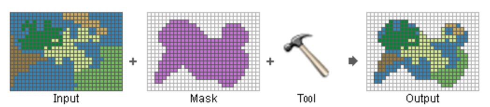</p> <figcaption>Mask operation: extracting specific classes from a segmented raster image.</figcaption> </figure> </div> Masks isolate specific pixel classes — e.g. extracting all vegetation pixels for GVI computation, or all road pixels for street-space analysis. --- name: tools ## Google Earth Engine A planetary-scale platform for Earth science data & analysis. .right_half[ <figure> <p>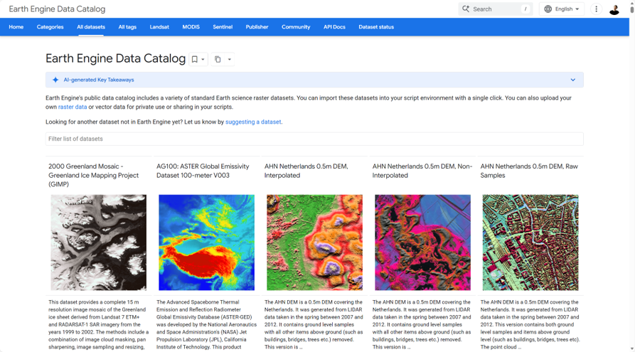</p> <figcaption>Earth Engine Data Catalog — petabytes of analysis-ready geospatial data.</figcaption> </figure> ] Key features: - **Cloud-based**: no need to download massive datasets - **Petabyte catalogue**: Landsat, Sentinel, MODIS, and hundreds more - **JavaScript and Python APIs** - **Built-in parallel processing** for planetary-scale analysis - **Free for research, education, and non-profit use** Example: Visualise building footprint data for Singapore: https://developers.google.com/earth-engine/datasets/catalog/GOOGLE_Research_open-buildings_v3_polygons --- ## Geemap: Python + Google Earth Engine .right_half[ <figure> <p>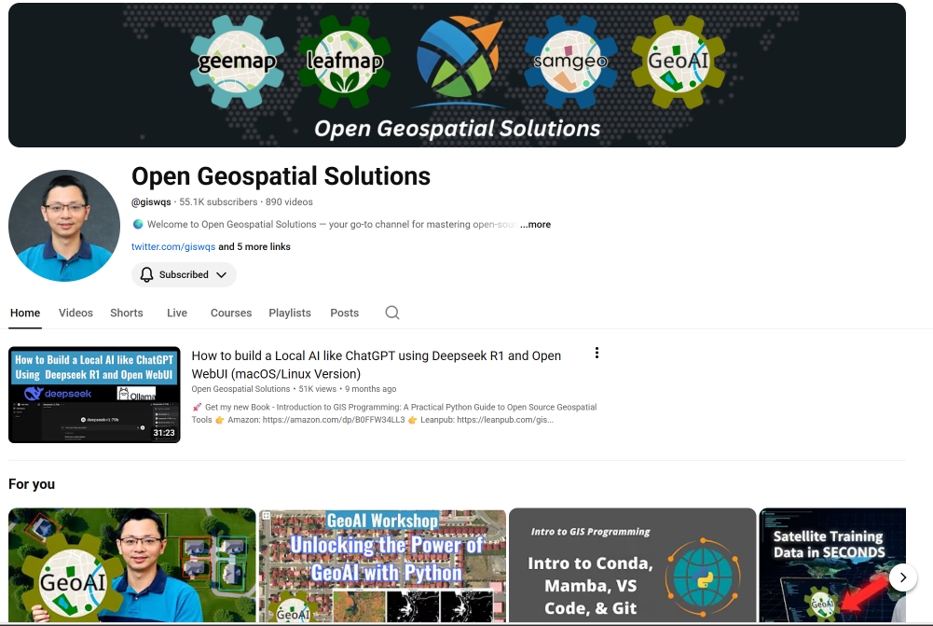</p> <figcaption>Geemap: A Python package for interactive Earth Engine analysis.</figcaption> <figsubcaption>Source: https://www.youtube.com/@giswqs</figsubcaption> </figure> ] Geemap combines: - **Google Earth Engine** for data access and cloud computation - **ipyleaflet** for interactive maps - **Jupyter notebooks** for reproducible workflows - A growing ecosystem of tutorials and examples For those already familiar with Python, geemap significantly simplifies working with GEE. --- ## Python Libraries for Raster Processing | Library | Purpose | |---|---| | **[Rasterio](https://rasterio.readthedocs.io/en/stable/)** | Reading, writing, and processing geospatial raster data. Modern, Pythonic API. | | **[GDAL](https://gdal.org/en/stable/)** | The foundational C/C++ library for raster and vector geospatial data. Powers QGIS and most GIS software. | | **[xarray](https://docs.xarray.dev/en/stable/)** | Multi-dimensional labelled arrays — excellent for NetCDF, climate, and time-series raster data. | | **[rioxarray](https://corteva.github.io/rioxarray/stable/)** | Bridges xarray with rasterio for CRS-aware raster operations. | | **[Geemap](https://geemap.org/)** | Interactive mapping with Google Earth Engine in Python. | | **[EarthPy](https://earthpy.readthedocs.io/en/latest/)** | Utilities for working with spatial raster data in Python. | | **[OpenCV](https://opencv.org/)** | Computer vision library for image processing and analysis. | --- ## Cartographic Symbology for Raster Data Choosing symbology for raster data is part of cartographic design: - **Single-band continuous** → graduated colour ramp (e.g. elevation, temperature) - **Single-band discrete** → palette with distinct colours per class (e.g. land cover) - **Multi-band imagery** → band combination selection (true colour, false colour) - **Hillshade** → overlay on top of other layers for terrain context <div align="center"> <figure> <p>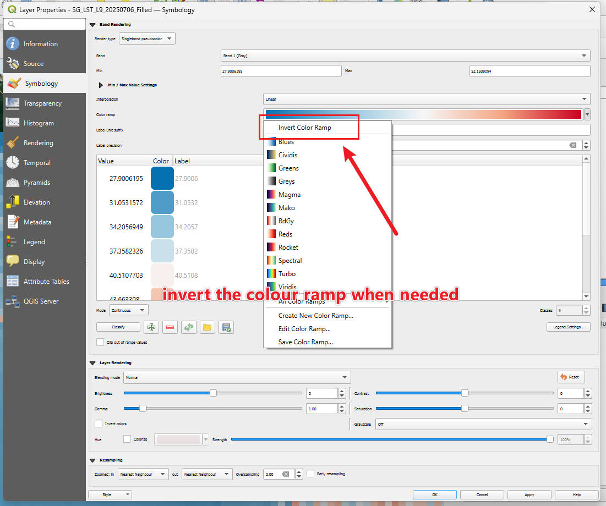</p> <figcaption>Adjusting colour ramps for raster visualisation — inverted ramp highlights different patterns.</figcaption> </figure> </div> --- name: tutorial ## Tutorial Workflow for Raster Analysis A practical raster analysis workflow: 1. **Inspect** — check the raster's extent, CRS, resolution, and band structure. 2. **Symbolise** — choose suitable symbology to understand the values visually. 3. **Clip or mask** — extract the raster to your study area. 4. **Transform** — run a reclassification, index calculation, or map algebra operation. 5. **Summarise** — use zonal statistics or visual comparison to interpret results. 6. **Document** — record assumptions about resolution, CRS, thresholds, and data sources. --- ## Learning Objectives Recap By the end of this module, students should be able to: 1. explain how raster data represents space as a grid of cells 2. distinguish between common raster types (continuous, categorical, single-band, multi-band) and their sources 3. interpret raster bands, cell values, extent, and resolution 4. describe core raster operations used in GIS and remote sensing (clip, mask, reclassify, overlay, map algebra, zonal statistics) 5. compute and interpret key remote sensing indices (NDVI, NDWI, NDBI, NDMI, EVI) 6. apply raster analysis concepts to urban questions such as vegetation, temperature, urban growth, and street-level perception 7. understand how images serve as raster data for computer vision tasks and urban indicator derivation 8. identify appropriate tools and libraries for raster processing (QGIS, Rasterio, GDAL, Google Earth Engine, geemap) --- ## Key Takeaways - **Raster data** represents space as a grid of cells — ideal for continuous surfaces and imagery. - **Resolution, extent, band structure, and CRS** strongly affect raster interpretation and must be checked before analysis. - **Core operations** include clipping, masking, reclassification, overlay, map algebra, warping/resampling, and zonal statistics. - **Remote sensing indices** such as NDVI, NDWI, NDBI, and LST transform multi-band imagery into interpretable urban variables. - **Nighttime light data** provides consistent global coverage for tracking urbanisation and economic activity over time. - **Images are raster data** — computer vision (segmentation, classification) turns pixel values into urban indicators like GVI. - **Raster and vector are complementary** — conversion between them, zonal statistics, and mask operations bridge the two models. - **Tooling**: QGIS for interactive work; Rasterio/GDAL for Python scripting; Google Earth Engine for planetary-scale cloud analysis. - Raster analysis becomes most powerful when technical operations are connected to **environmental and urban questions**. --- ## Reading Materials - Kang-tsung Chang and Carl M. Chang (2019), *Introduction to Geographic Information Systems*, 9th Edition, Chapter 12 (Raster Data Analysis) - USGS Landsat Missions: https://www.usgs.gov/landsat-missions/ - Copernicus Sentinel: https://dataspace.copernicus.eu/ - Google Earth Engine Data Catalog: https://developers.google.com/earth-engine/datasets - Rasterio Documentation: https://rasterio.readthedocs.io/en/stable/ - Geemap Tutorials: https://geemap.org/ --- <xL>Continue with Lecture: </xL><button onclick="window.location.href='spdeng.html'">Go to Spatial Data Integration and Feature Engineering</button> <xL>Back to course menu: </xL><button onclick="window.location.href='index.html'">Go Back to Menu</button>